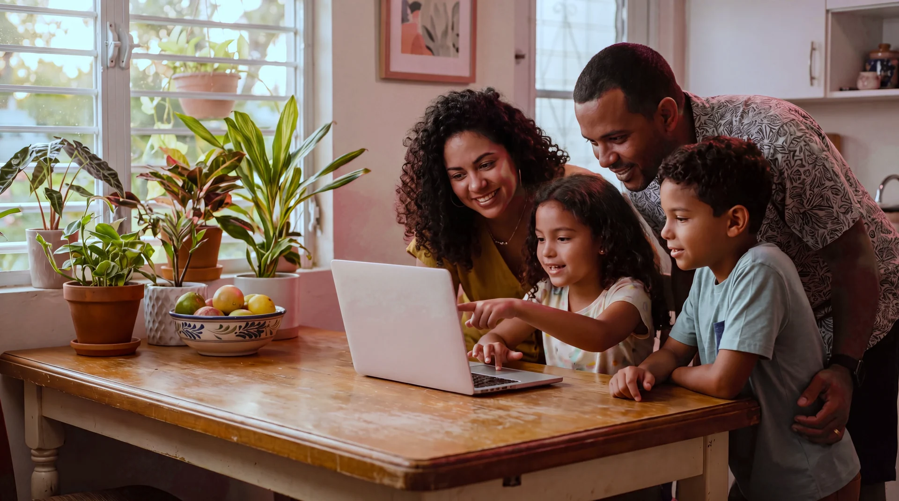
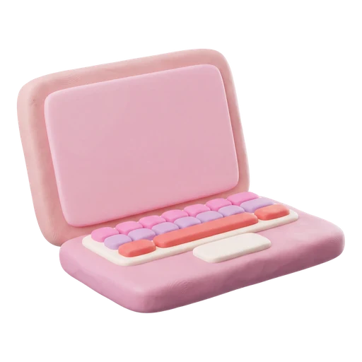
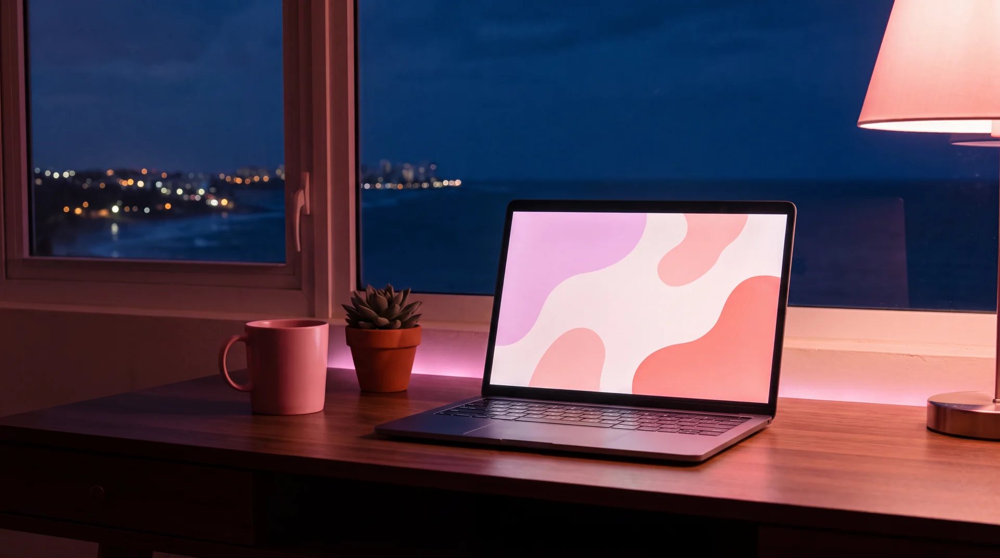
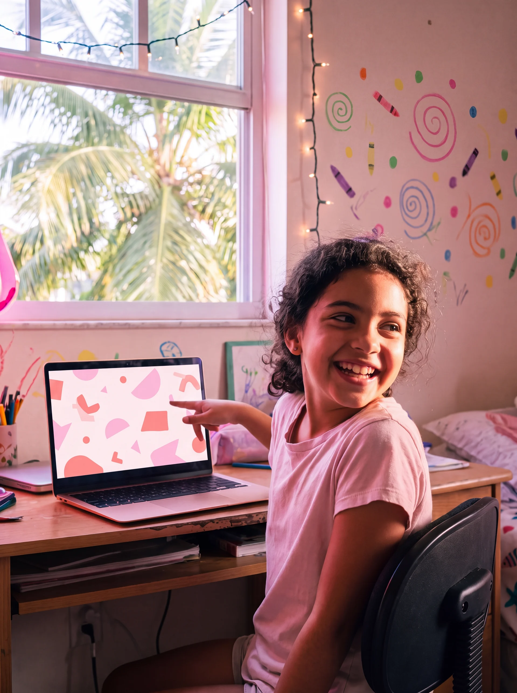
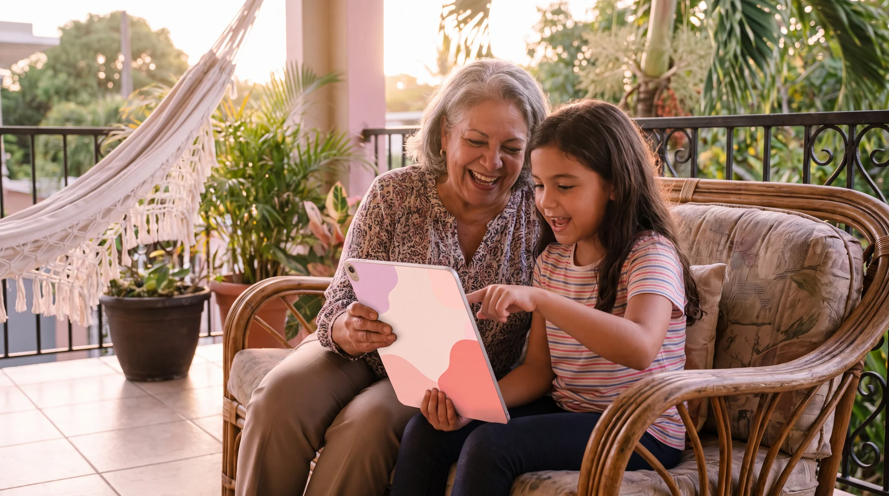
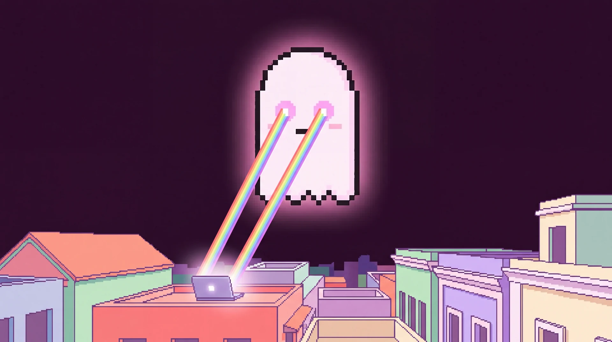

Build a website
tonight with AI
From a mood board to a live website in one evening. No coding experience needed.
Invest Puerto Rico

- Collect
- Prompt
- Build
- Ship
A real website
with your name
on it
Pick a project you care about. By the end of tonight, it has a home on the internet.
- One page, clean and animated, that looks designed
- Built by you, guided by AI, no code written from scratch
- Hosted for free on GitHub Pages
Write down one website idea right now. A hobby, a family business, a school project. Keep it small.
- Collect
- Prompt
- Build
- Ship
Collect. Prompt.
Build. Ship.
- 01Collect · Steps 1–4Images, animations, colors and your section order
- 02Prompt · Steps 5–6Fill in one design spec, then let Bolt.new enhance it
- 03Build · Steps 7–10Two AIs draft it, you pick a favorite, Claude helps polish
- 04Ship · Step 11Publish free on GitHub Pages, then add your own .com
Open a notes app or a folder called 'My Website'. Everything you collect goes there.

Collect
- Collect
- Prompt
- Build
- Ship
Find inspiration
images
Search for the kind of site you want. Save the looks you love to one board.
- Search terms that work: "bakery website design", "landing page UI", "portfolio web design"
- Look for layout, mood, and typography, not just pretty photos
Make a Pinterest board named after your project and save your first 3 pins.
 Save
Save
Save- Collect
- Prompt
- Build
- Ship
Find inspiration animations
A free library of animated website pieces. Find one or two you love and copy their links.
Save one OriginKit link and write next to it which section it goes in, like 'Hero'.
- Collect
- Prompt
- Build
- Ship
Pick a color
palette
Ready-made palettes of four colors that already look good together. Pick one, copy the codes.
- Click a color to copy its code, like #FFB2EF
- Tip: one dark, one light, two accents is an easy mix
- Collect
- Prompt
- Build
- Ship
Plan your sections,
top to bottom
List your sections in order. Navbar first, then the Hero. After that, it is up to you.
- Then add 3 or more: About, Services, Menu, Gallery, Reviews, Contact
- Add one short idea per section, like 'three cards with photos'
Write your section list: Navbar, Hero, and at least three more, each with a one-line idea.
Prompt
- Collect
- Prompt
- Build
- Ship
Mash it into one design spec
Take what you love from every piece and describe it in one prompt.
Open the template on the next slide and fill in the first blank: what is your website for?
- Collect
- Prompt
- Build
- Ship
Fill in the blanks
Copy it. Swap each pink blank for your own words and links.
Build a single-page, static website for… 1{WHAT IS YOUR SITE FOR?}
The sections and layout are… 2{YOUR SECTION LIST}
Use these colors… 3{YOUR 4 COLOR CODES} and this mood… 4{3 MOOD WORDS}
Extract and implement this element in the 5{SECTION NAME} section 6{ORIGINKIT LINK}- 1your idea
- 2Step 4 list
- 3Step 3 colors
- 4Step 1 board
- 5a section name
- 6Step 2 link
Copy the template, replace every blank, and save it in your notes.
- Collect
- Prompt
- Build
- Ship
Let Bolt.new
enhance your prompt
One button turns your filled template into a master prompt.
Build a single-page, static website for… my family’s bakery. Sections: Navbar, Hero…
Build: a single-page, static website for a family bakery.
Sections: Navbar · Hero · Menu · About us · Gallery · Contact.
Palette: #FFB2EF blush · #FFF0FA cream · #2A1F27 cocoa.

Build
- Collect
- Prompt
- Build
- Ship
Let two AIs race on arena.ai
Paste your prompt once. Two AIs build it side by side. You pick the winner.
Two AI designers on arena.ai:
AGeminiGemini-3.8-flashvsBClaudeClaude-sonnet-5-highor the newest Geminiand Claude on the list
- 1click Side by Side (top tab)
- 2pick these two names
- 3paste your prompt
- 4send

- Collect
- Prompt
- Build
- Ship
Try it on
Google Stitch too
Same prompt, another designer. Preview the screens, then export the code.
Paste your enhanced prompt into Google Stitch and generate two designs (hit regenerate once).
- Collect
- Prompt
- Build
- Ship
Pick your favorite. Download it.
Put your drafts side by side. Choose the one that feels most like you.
Download your favorite design's code into your 'My Website' folder.

- Collect
- Prompt
- Build
- Ship
Open the code in
your Claude app
A patient helper that works on the file with you, on your own computer, one section at a time.
index.html. Opening a preview…Install the Claude app and open your 'My Website' folder in it.
- 1Download the app and sign in
- 2Give it your My Website folder
- 3Paste the next slide’s prompt

Ship

- Collect
- Prompt
- Build
- Ship
Publish free
on GitHub
Pages
Free hosting at yourname.github.io.
Make your free GitHub account tonight. Publishing takes about five minutes.
- 1New repositoryname it yourname.github.io
- 2Uploadeverything in your My Website folder
- 3Settings › Pagesmain › Save

- Collect
- Prompt
- Build
- Ship
Sofi's Lemonade Stand
A 10-year-old wants a website for her weekend stand. Here is her filled-in spec.
For: Sofi’s Lemonade Stand, run by a 10-year-old. Flavors, prices, and when it’s open.
Hero: a big photo of lemonade, “Squeezed fresh every Saturday”.
Colors: #F7E36Blemon#A8E6CFmint#FFB2EFpink#1D2A4Dnavy
Compare Sofi's filled-in spec with yours. Is anything missing from yours?
- Collect
- Prompt
- Build
- Ship
From four drafts to a live site
Decide who at home will be your 'Sofi' and which project you'll build together.

- Collect
- Prompt
- Build
- Ship
Teach it to
your family
A great first project for kids and grown-ups together.
The topic, the pins, the colors. It’s their taste.
Sign-ups, purchases, and keeping private info off the site.
Read the AI’s answers: “does this look like what we wanted?”
Pick a date this week for a 30-minute 'Collect' session at home.
- Collect
- Prompt
- Build
- Ship
All eleven steps on one slide
Snap a photo of this slide. It is the whole workflow.
- 01Imagespinterest.com
- 02Animationsoriginkit.dev
- 03Colorscolorhunt.co
- 04Sections: Navbar, Hero, then the rest
- 05Fill in the design spec template
- 06Bolt.new → “Enhance prompt”
- 07arena.ai + Google Stitch
- 08Download your favorite
- 09Open it in the Claude app
- 10Paste the starter prompt

Now go
build
something
Start tonight with Step 1. Share your site with me when it's live, I'd love to see it.
“Go build something great. I'll be floating around if you need me.”Chloé